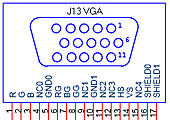
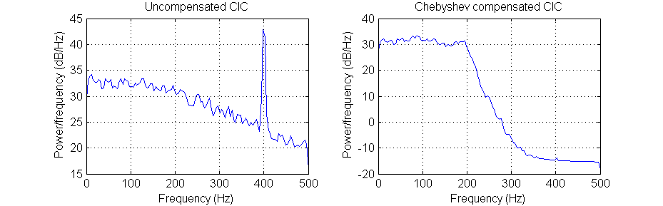
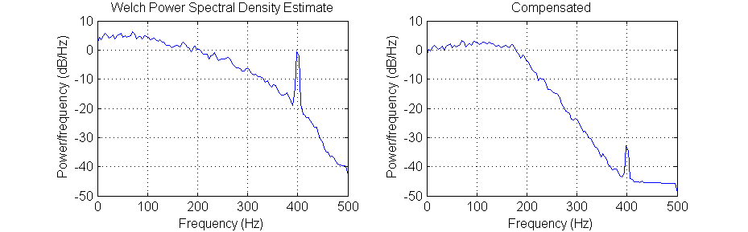

ECE 5760: Laboratory 2
Radio transmitter and receiver
Introduction.
In this assignment you will implement an AM transmitter and receiver. To
test the transmitter, you will show that you can send voice or music to an
external receiver from the transmitter. The digital RF signal will then be
sent to a AM receiver on the FPGA, which will decode the audio and send it
back out throught the audio codec.
Procedures:
- You must handle the boards only on on the ESD mat. These boards are expensive and you must be careful of them.
- Make sure the Altera DE2 board is connected to power and to the PC as specified
in the evaluation board description. Turn on the power supply with the red switch
on the board. Make sure the toggle switch on the left edge of the board marked (
Run/Prog) is in the Run position and leave it there at all times.
The FPGA will program in the Run position. Putting the switch in the Prog position writes your design to flash memory, which you do not want to do.
- The default top level module for the DE2 defines all of the logical i/o signals.
- You can define the mapping from logical signal to FPGA pins (pin assignment in QuartusII) for all the pins at once by importing this file using the menu item
Assignments... Import Assignments... and specifying the file name. There is no need to define pins one-by-one.
- The hardware audio interface is a Wolfson
WM8731 codec which is controlled by an I2C interface. I have simplified the
drivers somewhat. The cleanest version is in this project
zip. The context for the drivers is explained in the DSP
page, example 1.
- The VGA output can
operate as a 50 MHz D/A converter if you set the
vga_blanking and vga_sync i/o
signals high. You also need to supply a clock to VGA_CLK. Output
the sine wave through the VGA red channel. The
connector pinout is shown with the view of the socket looking at the edge of
the board. If you accidentally ground one of the RGB outputs, it will instantly
destroy the output driver on the DE2. A safe approach is to
use one of the screws at the corner of the DE2 as ground for the scope.
- When modulating the RF signal, you will need to multiply the 16-bit 2's comp
input from the audio codec by a 16-bit 2's comp sine wave carrier. A Verilog
ROM module to generate a 16-bit sine wave is near the end of this
code, generated by a matlab program. The table is designed to generate a sine wave with only 14 bits of amplitude, so that two sine waves can be added without further scaling to prevent overflow. For output through the VGA DAC, you will need to convert the 16-bit
2's comp to 10-bit offset binary.
- Download the matlab example to see the mathematical structure of the transmitter
and receiver.
- There are two more examples of CIC filters with compensators.
The basic frequency response of the CIC filter is
A(f)=mag(sin(πMf)/sin(πf/R))N
where M is the differential delay after decimation (usually one or two sample
delay at the decimated rate), R is the decimation ratio, and N is number of
concatenated stages. The CIC filter is followed by a low order IIR filter running
at the decimated rate to compensate the low frequency response of the CIC and
help with antialiasing the high frequency response.The first
example shown
below has N=4, R=10 and M=1. The input is noise plus a sine wave. With the
compensation, the bandwidth is about 40% of the decimated bandwidth.

The second
example has N=2, R=10, and M=2. Cutoff is not quite as sharp because
of the lower order (N). Bandwidth is also about 40% of the decimated bandwidth.

See also CIC
Filter Introduction by Matthew P. Donadio andUnderstanding
CIC filters.
--Using QuartusII SignalTap tool to verify your design.
Here are the steps that seem to be necssary to get SignalTap working. For more information, read the Altera tutorial on using SignalTap, an on chip logic analyzer.
- Choose menu
Tools>SignalTap
- In the main SignalTap window, click
Hardware Setup... (in the upper rigtht corner)
and in the dialog box choose the hardware (USB-Blaster)
- Choose menu
Edit>AddNodes...
- Choose the appropriate
Filter to simplify the list of nodes, the press List
- Highlight nodes and move to right-hand list using
> button
- Click
OK to get back to main SignalTap window
- In the main SignalTap window, click the
Clock ... button and choose the clock signal as in AddNodes
- In the node panel of the main window, set up trigger conditions.
- Compile and then load the design onto the FPGA
- In the main SignalTap window, toggle the
Data/Setup button
- Choose menu
Processing >Run Analysis
Assignment
- Build three AM transmitters on the FPGA with a carrier frequencies at
800, 1000 and 1200 KHz. The DDS unit for the carrier should run at 50 MHz
or lower. Modulate each carrier with
a unique waveform, perhaps 3 different audio sine wave frequencies. You probably
want to keep the modulation frequency below 5 khz or so. The DDS for the
audio can run at the same rate. The output from all transmitters should be
added together as 16-bit 2'comp numbers, and then converted to 10-bit offset
binary and sent to a VGA DAC channel. Demonstrate to the TA that you can
receive each transmitter on a standard AM radio by tuning the radio.
- Use the audio codec input to replace one of the three transmitter modulation
inputs so that you can transmit waveforms from the signal generator or other
audio source.
- Loop
back the summed transmitter signals into an AM receiver built on the FPGA
so that you can receive each station by tuning the local oscillator. You
will be building a direct
conversion AM reciever. The steps involved in building
a receiver are explained in a matlab
program and are
summaried here:
- Convert the looped-back, 10-bit transmitted signal back to 16-bit 2'comp.
- Mix with a local oscillator running at the carrier
frequency to make a baseband signal.
- Lowpass the resulting baseband signal using a CIC filter to remove the
sum term of the mixed signal and
the out-of-tune stations. Decimate and lowpass to convert to audio rate
by a 50MHz/48 KHz ratio or 1042.
- Include a Chebyshev compensator after the CIC filter. This will improve
spectral flatness and minimize aliasing.
- Highpass filter to remove the DC component from the audio.
- Use the audio codec output to display the received audio signal on the
scope.
Be prepared to separately demo your transmitter and receiver design to your
TA in lab.
Your written lab report should include the sections mentioned in the policy page, and :
- Filter frequencies and plots of filter response.
- A heavily commented listing of your Verilog design and GCC code.
- How close together can you make the transmitted carriers and still separate
the modulation?
Copyright Cornell University
September 10, 2010